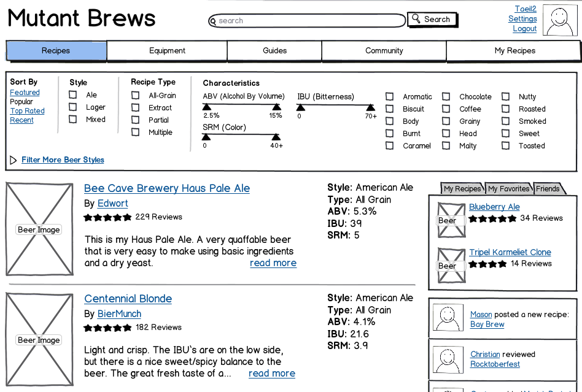

Mutant Brews

Skills
Interaction Design
Research
Tools
Balsamiq
Partners
Mason Cabot
Christian Dambolena
Gautam Tevatia
Mutant Brews is a beer recipes website. Beer recipes have different needs than food. For example, it's more important to be a resource for equipment and tutorials. Also, there are more distinct characteristics ABV (alcohol by volume) and IBU (bitterness). After researching through beer recipes sites, forums, and books, we designed an interface for the recipes listing. Read more about it here.